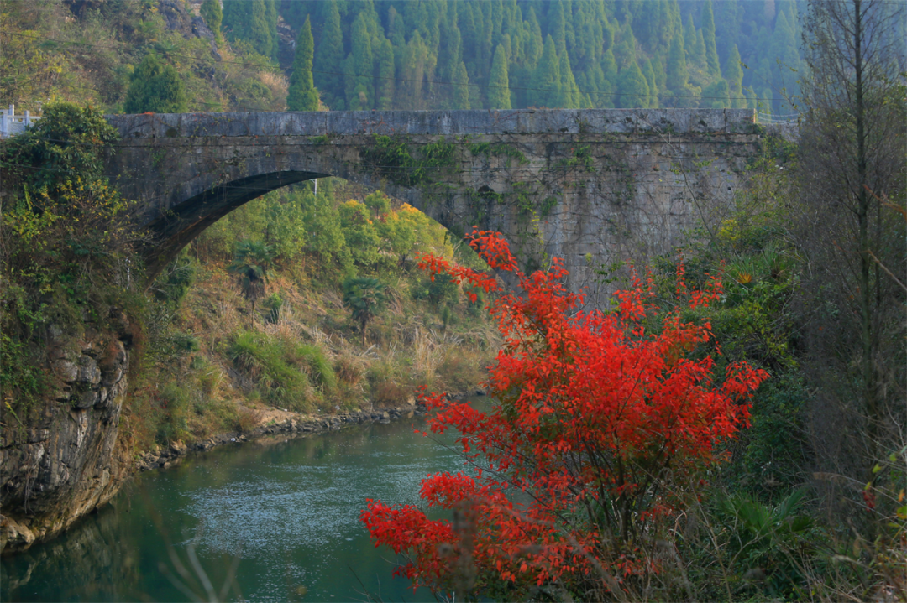
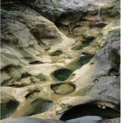

油溪古桥
石臼群
宋朝诗人周惠有《油溪岭》：
油溪河淼漫，油岭复巑埙。白日蛇龙起，青林虎豹抟。
乾坤谁设险，登陟壮遐观。
刀剑今牛犊，须知帝德宽。
“油溪石拱桥”——同样是一高一低、一斜一正、一新一旧两座拱桥，其中上游那座古桥就是位于油溪桥村境内的新化至安化古驿道上的油溪石拱桥。该桥原名横溪桥，呈南北向横跨油溪河，全长53米，宽8米，高22米，单孔跨径28米，为湖南境内单孔跨径最大的古石拱桥。全桥用石料砌成，最大料石长3m，宽2.4m，厚1m，重达7吨以上，两石相隔处用生铁钩连， 桥面两边置石栏，桥北端倚天然岩石为墩，东北石栏雕刻有一米多长的蜈蚣浮雕，须鳞可辨，栩栩如生，南端桥头立有石狮，昂头若啸，威武雄壮。该桥经历250余年仍巍然如山，完损无缺，其坚固程度实为罕见，足见建筑之精妙。
桥面两边置石栏，桥北端倚天然岩石为墩，东北石栏雕刻有一米多长的蜈蚣浮雕，须鳞可辨，栩栩如生，南端桥头立有石狮，昂头若啸，威武雄壮。该桥经历250余年仍巍然如山，完损无缺，其坚固程度实为罕见，足见建筑之精妙。
油溪石拱桥为江南峡谷第一古石桥。因地势险要，修了三次，垮了两次。始建于明朝崇祯元年（1638），至清朝崇德五年（1641）建成，历时13年。后被大水冲垮了。清乾隆十一年（1747），乾隆皇帝下江南，经过油溪河，见此地山川形胜，溪流湍急，峭壁对峙，仅一木筏引渡，便望溪兴叹：此地何无桥！随后，县内乡绅又倡议建桥，四方义士慷慨捐资，于乾隆十二年（1748）将桥建成了。乾隆二十七年（1762）他第三次南巡去大熊山，经过此桥时，特下马察看，又慨然叹曰：此桥巧夺天工！过了整整一百年，至道光戊申年（1848）夏六月，油溪河发大水，水大异常，水面离桥仅一尺来高，忽然，被雨水冲倒的大树连泥带树漂来，枝柯相格，势不可当，桥又被冲垮了。人们都说那是一条神蛟作怪。此后，过河又只得靠木船引渡了。每当春夏水涨，常常翻船，淹死了不少人。清同治戊辰（1868）春月，本地乡绅李承海和刘善居，都年过八十，以百年未尽之身首倡建桥，四方人士慷慨捐助，于庚午年（1870）冬月建成此桥。传说建桥时每日百人做工，却只九十九人吃饭，有一人是神仙相助，亲手技术先进出一块拱桥合龙用的尖石，纹丝不动，天衣无缝。神仙还将兴水作怪的神蛟赶走，召来千年成精的蜈蚣镇桥。
1982年12月，由新化县人民政府列为县级保护文物。为保护油溪河石拱桥这一历史文物，在古桥下约百米处又建一座新桥。于1998年12月竣工，系钢筋混泥土板肋拱桥，长109.62米，宽7.5米，人行道1米，单孔，净高78米，跨径72米，也是湘中地域最高的拱桥。新桥建成后，既减去了古桥的车辆负载压力，又为油溪河增添了新的景观。如今，这里双桥拱映，相得益彰，形胜山川更添特殊性。
石臼地质景观分“冰白”和“壶臼”两大类，“冰臼”是冰川融水沿冰川裂隙从数十米至数百米以上的高度，自上而下以“水滴石穿”的方式，对基岩进行强烈的冲蚀作用而成;“壶臼”是普通岩石河床被水流冲磨而成的深穴，  是水流使石质河床基岩节理交汇点或破碎处成为坑洼，坑洼里的砾石在流水的带动下旋转、撞凿和磨蚀坑壁，使坑洼不断扩大和加深，最终形成深度和宽度达数十厘米至数米的深穴。
此处石臼为“壶臼”地质景观，从此沿河往上数公里河床上都是石臼，为防止过度开发破坏景观，暂时以原生态对外开放。